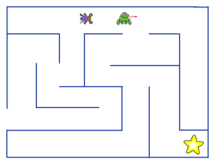
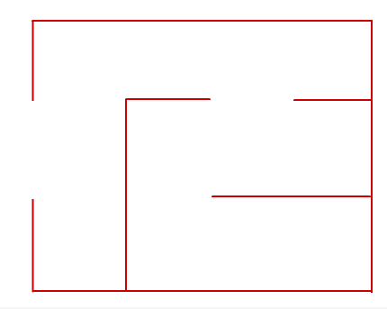

I dette spillet vil vi kontrollere en liten utforsker mens hun leter
etter skatten gjemt inne i labyrinten. Dessverre er skatten beskyttet
av den skumle froskekongen. Vi vil lære hvordan vi kontrollerer
figurer, og hvordan vi kan programmere figurer til å bevege seg selv.

Steg 1: Hvordan styre figurer med piltastene
Vi begynner med å se på hvordan vi kan styre figurer med
piltastene. For å få til dette vil vi bruke
Hendelser-klosser som merker når man trykker på
tastaturet.
Sjekkliste
Start et nytt prosjekt.
Slett kattefiguren ved å høyreklikke på den og velge slett.
Legg til en ny figur. Klikk på
-knappen
og velg en figur du har lyst til å styre rundt. Vi har brukt
Dyr/Beetle-figuren.
Gi den nye figuren navnet Utforsker ved å klikke på i.
Vi begynner med å la figuren bevege seg oppover skjermen når vi
trykker på pil opp-tasten.
Legg til følgende skript på Utforsker-figuren din.
når [pil opp v] trykkes
pek i retning (0 v)
gå (5) steg
Prøv å trykk på pil opp-tasten. Beveger utforskeren din seg
oppover skjermen? Nå må vi lage lignende skript for de andre
tastene.
Legg også til disse skriptene, slik at Utforsker har totalt fire
skript, ett for hver tast.
når [pil ned v] trykkes
pek i retning (180 v)
gå (5) steg
når [pil høyre v] trykkes
pek i retning (90 v)
gå (5) steg
når [pil venstre v] trykkes
pek i retning (-90 v)
gå (5) steg
Test prosjektet
Klikk på det grønne flagget.
Beveger utforskeren din seg rundt slik du hadde forventet?
Kan du forandre hvor raskt utforskeren flytter seg?
Tallet 5 i gå (5) steg-klossene bestemmer hvor raskt
utforskeren flytter seg rundt. Vi vil gjerne eksperimentere litt for å
se hvilken fart som passer best i spillet vårt, men for å endre farten
må vi bytte tallet i fire forskjellige skript. Det blir for mye jobb!
Sjekkliste
Vi vil i stedet bruke en variabel som kan styre farten til
Utforsker-figuren.
Lag en ny variabel ved å gå til Data-kategorien og
klikk Lag en Variabel.
Kall variabelen hastighet, og velg at den bare skal gjelde For denne figuren.
Til slutt, fjern avhukingen ved siden av den nye
(hastighet)-klossen for at variabelen ikke skal vises på
scenen.
Nå må vi endre i skriptene våre slik at bruker
(hastighet)-variabelen.
Lag først et nytt skript som setter verdien av (hastighet) til
10.
når grønt flagg klikkes
sett [hastighet v] til (10)
Deretter endrer vi de fire skriptene vi allerede har laget slik at
de bruker (hastighet).
når [pil opp v] trykkes
pek i retning (0 v)
gå (hastighet) steg
når [pil ned v] trykkes
pek i retning (180 v)
gå (hastighet) steg
når [pil høyre v] trykkes
pek i retning (90 v)
gå (hastighet) steg
når [pil venstre v] trykkes
pek i retning (-90 v)
gå (hastighet) steg
Test prosjektet
Klikk på det grønne flagget.
Beveger utforskeren din seg fortsatt rundt slik den gjorde
tidligere?
Forandrer hastigheten til utforskeren seg hvis du endrer verdien av
(hastighet) og klikker på det grønne flagget igjen?
Velg en hastighet du synes passer.
Steg 2: Vi tegner vår egen labyrint
Nå som vi kan bevege utforskeren vår rundt omkring på skjermen, skal
vi gi henne en utfordring! Vi vil tegne en labyrint som hun kan
bevege seg rundt inni.
Sjekkliste
Velg nederst til
venstre på skjermen for å tegne en ny bakgrunn. Pass på at du
faktisk tegner en ny bakgrunn, og ikke en ny figur.
Gi den nye bakgrunnen navnet Labyrint.
Velg en farge du liker og tegn en liten labyrint. Det er viktig at
alle veggene i labyrinten har samme farge (vi oppdager hvorfor
snart). Du kan velge selv hvordan labyrinten skal se ut, den trenger
ikke en gang å ha rette vegger!

Dette er et eksempel på en liten og enkel labyrint. Du kan selv
velge hvordan din labyrint skal se ut! Men ikke bruk for lang tid
på å tegne labyrinten nå, for vi vil jo fortsette å
programmere. Du kan i stedet komme tilbake og tegne en mer
avansert labyrint etter at du er ferdig med spillet!
Tips
Dersom du vil tegne rette vegger er det enklest å bruke
linjeverktøyet, . Du kan i
tillegg holde inne shift-knappen for at linjene skal bli helt rette.
Test prosjektet
Klikk på det grønne flagget.
Kan du bevege utforskerfiguren din rundt inne i labyrinten?
Dersom figuren din er for stor kan du gjøre den mindre ved å trykke
på -knappen på toppen av skjermen.
Hva skjer dersom figuren din går på veggen i labyrinten?
Steg 3: Utforskeren kan ikke gå gjennom veggen
Selv om vi har tegnet en flott labyrint bryr ikke utforskeren seg noe
om den. Hun kan bare gå gjennom veggene. Det skal vi gjøre noe med
nå
Sjekkliste
For å oppdage når Utforsker-figuren vår går gjennom veggen på
labyrinten vil vi bruke en (berører fargen [#ffffff])-kloss.
Denne klossen merker om en figur kommer borti en spesiell farge. Her
er det viktig at vi har tegnet alle veggene i labyrinten i samme
farge.
Vi legger (berører fargen [#ffffff])-klossen inn i skriptet vi
allerede har laget som setter (hastighet)-variabelen.
når grønt flagg klikkes
sett [hastighet v] til [10]
for alltid
hvis <berører fargen [#cc0000]?>
vend høyre (180) grader
gå (hastighet) steg
vend høyre (180) grader
slutt
slutt
For å få riktig farge i berører fargen [#cc0000]-klossen klikker du
først på den lille firkanten hvor fargen vises. Deretter flytter du
musepekeren slik at den peker på en vegg i labyrinten din. Da forandres fargen
i den lille firkanten. Klikk igjen for å velge denne fargen.
Test prosjektet
Klikk på det grønne flagget.
Blir utforskeren stoppet når hun prøver å gå gjennom veggen?
Skjønner du hvordan skriptet sier at utforskeren ikke kan gå gjennom
veggen?
Tips
En måte vi kan bruke for å begrense hvor en figur kan gå, er å tvinge
den til å ta et skritt tilbake når den gjør noe feil. I koden
vend høyre (180) grader
gå (hastighet) steg
vend høyre (180) grader
vil figuren først snu seg helt rundt (180 grader), deretter ta et
skritt, og til slutt snu seg rundt igjen slik at den peker i samme
retning som da den startet.
Steg 4: På leting etter skatten
Nå kan vi bevege oss rundt i labyrinten. Men det blir jo fort
kjedelig om vi ikke har noe å gjøre inne i labyrinten. La oss se om
vi kanskje finner en skatt!
Sjekkliste
Legg til en ny figur. Du kan velge en figur fra biblioteket ved å
trykke
eller tegne en figur selv ved å trykke
. Vi brukte figuren
Ting/Star1.
Gi den nye figuren navnet Skatt.
Dra skatten rundt inne i labyrinten din, og gjem den et sted den er
vanskelig å komme til.
Vi skal nå lage litt kode som oppdager når utforskeren finner
skatten. Her har vi faktisk et valg: Vi kan lage et skript på
Utforsker som sjekker om hun berører Skatt, eller vi kan gjøre det
omvendt, vi kan lage et skript på Skatt som sjekker om den berører
Utforsker.
I dette tilfellet spiller det liten rolle hva vi velger, men om vi
tenker oss at vi kanskje vil lage flere skatter senere kan det være
litt enklere å lage skriptet på Skatt.
Pass på at figuren Skatt er markert, og skriv følgende kode:
når grønt flagg klikkes
for alltid
hvis <berører [Utforsker v]?>
skjul
slutt
slutt
Test prosjektet
Klikk på det grønne flagget.
Forsvinner skatten når utforskeren finner fram til den?
Hva skjer når du prøver å starte spillet på nytt etter å ha funnet
skatten? Hvor har skatten blitt av?
Sjekkliste
Det er et problem i spillet vårt. Etter at utforskeren har funnet
skatten en gang, forblir skatten borte.
Vi må passe på at skatten vises på begynnelsen av spillet. Endre
skriptet på Skatt ved å legge til vis helt i begynnelsen.
når grønt flagg klikkes
vis
for alltid
hvis <berører [Utforsker v]?>
skjul
slutt
slutt
Vi har enda et problem: Når vi starter spillet på nytt står
utforskeren fortsatt der den fant skatten sist. Det blir ikke veldig
spennende.
Klikk på Utforsker-figuren.
Legg til en gå til x: () y: ()-kloss rett etter sett [hastighet v] til (10)-klossen.
For å finne ut hvilke tall vi vil bruke for x og y kan vi gjøre
følgende. Dra utforskeren til et sted det er fint å starte fra. Se
øverst i høyre hjørne. Sammen med Utforsker-figuren står det x
og y og to tall. Dette er posisjonen til figuren akkurat nå. Skriv
disse to tallene inn i gå til x: () y: ()-klossen.
Hele skriptet vil nå se slik ut (dine tall for x og y vil være
forskjellige):
når grønt flagg klikkes
sett [hastighet v] til [10]
gå til x: (-200) y: (0)
for alltid
hvis <berører fargen [#cc0000]?>
vend høyre (180) grader
gå (hastighet) steg
vend høyre (180) grader
slutt
slutt
Test prosjektet
Klikk på det grønne flagget.
Forsvinner fortsatt skatten når utforskeren finner fram til den?
Virker spillet slik det skal når du starter det på nytt etter å ha
funnet skatten?
Steg 5: Froskekongen vokter i gangene
Nå skal vi gjøre spillet vanskeligere. Froskekongen vandrer rundt i
labyrinten og passer på skatten.
Sjekkliste
Legg til en ny figur. Vi brukte Dyr/Frog. Gi den navnet
Froskekonge.
Plasser den nye figuren et sted i labyrinten. Gjør den mindre eller
større om nødvendig.
Vi begynner med å la Froskekonge merke at den fanger utforskeren.
Dette blir veldig likt hvordan Skatt merket at den ble funnet.
Legg til følgende kode:
når grønt flagg klikkes
for alltid
hvis <berører [Utforsker v]?>
si [Tok deg!] i (1) sekunder
stopp [alle v] :: control
slutt
slutt
Linjen stopp [alle v] :: control gjør at skriptet på Skatt
slutter å kjøre. Det betyr at vi klarer ikke å få tak i skatten etter
at vi har blitt tatt av Froskekonge.
Test prosjektet
Klikk på det grønne flagget.
Hva skjer om utforskeren kommer borti froskekongen?
Hva skjer når du finner skatten etter å ha blitt tatt av
froskekongen?
Sjekkliste
Til sist skal vi få froskekongen til å bevege seg rundt i labyrinten.
Start et nytt skript på Froskekonge-figuren. Igjen kan du bytte ut
tallene for x og y med noe som passer for din labyrint.
når grønt flagg klikkes
gå til x: (50) y: (100)
pek i retning (-90 v)
Før vi lar Froskekonge begynne å bevege seg lager vi en
(hastighet)-variabel også for ham. Klikk på
Data, og deretter Lag en Variabel. Kall variabelen
hastighet og la den gjelde kun For denne figuren. Tilslutt,
fjern avhukingen på variabelen.
Vi kan nå utvide skriptet slik at froskekongen går fram og
tilbake. Vi får ham til å snu når han treffer veggen på nesten samme
måte som vi hindrer utforskeren i å gå gjennom veggen.
når grønt flagg klikkes
gå til x: (50) y: (100)
pek i retning (-90 v)
sett [hastighet v] til (5)
for alltid
gå (hastighet) steg
hvis <berører fargen [#cc0000]?>
vend høyre (180) grader
gå (hastighet) steg
slutt
slutt
Helt tilslutt kan vi gjøre det enda vanskeligere ved å la froskekongen
av og til endre retning.
Legg til kode som lar Froskekonge snu seg tilfeldig rundt i labyrinten:
når grønt flagg klikkes
gå til x: (50) y: (100)
pek i retning (-90 v)
sett [hastighet v] til (5)
for alltid
gå (hastighet) steg
hvis <berører fargen [#cc0000]?>
vend høyre (180) grader
gå (hastighet) steg
slutt
hvis <(tilfeldig tall fra (1) til (25)) = (1)>
vend høyre ((tilfeldig tall fra (-1) til (1)) * (90)) grader
slutt
slutt
Disse to siste klossene ser litt kompliserte ut. La oss se litt nøyere på dem.
Klossen hvis <(tilfeldig tall fra (1) til (25)) = (1)> sier at
vi skal gjøre noe cirka èn av 25 ganger.
Dette noe er vend høyre ((tilfeldig tall fra (-1) til (1)) * (90)) grader. Tegnet * betyr gange, slik at om vi velger
tilfeldig mellom tallene -1, 0 og 1, betyr det at froskekongen vil
vende -90, 0 eller 90 grader. Det vil si at den svinger mot venstre,
fortsetter rett frem eller svinger mot høyre.
Tips
Du kan av og til oppleve at Froskekonge setter seg fast i
veggen. Dette er fordi Froskekonge fortsatt berører labyrintveggen
etter at den har snudd seg. Et par ting du kan prøve for å forbedre
dette er å gjøre Froskekonge-figuren mindre, legge en begrens rotasjon [ikke roter v]-kloss øverst i Froskekonge-skriptet,
eller velge en figur som er rundere (prøv også å viske bort tunga
til Froskekonge om du bruker Dyr/Frog-figuren).
Test prosjektet
Klikk på det grønne flagget.
Klarer du å få tak i skatten?
Om du synes spillet er for lett eller vanskelig er det mange måter
du kan endre dette på! Prøv å lag froskekongen større eller
mindre. Prøv å endre hastigheten på både utforskeren og
froskekongen. Om du endrer tallet 25 i det siste skriptet vi laget
for Froskekonge vil han endre retning oftere eller sjednere.
Du kan også prøve å lage flere skatter. Prøv å høyreklikk på
Skatt-figuren og velg Lag en kopi.
Lagre prosjektet
Da var vi ferdig med labyrint-spillet!
Nå kan du gå på skattejakt! Hvis du vil kan du dele spillet med
familie og venner ved å trykke Legg ut.
Forbedre denne siden
Funnet en feil? Kunne noe vært bedre? Hvis ja, vennligst gi oss tilbakemelding ved å lage en sak på Github eller fiks feilen selv om du kan. Vi er takknemlige for enhver tilbakemelding!

 -knappen
og velg en figur du har lyst til å styre rundt. Vi har brukt
-knappen
og velg en figur du har lyst til å styre rundt. Vi har brukt
 nederst til
venstre på skjermen for å tegne en ny bakgrunn. Pass på at du
faktisk tegner en ny bakgrunn, og ikke en ny figur.
nederst til
venstre på skjermen for å tegne en ny bakgrunn. Pass på at du
faktisk tegner en ny bakgrunn, og ikke en ny figur. -knappen på toppen av skjermen.
-knappen på toppen av skjermen.